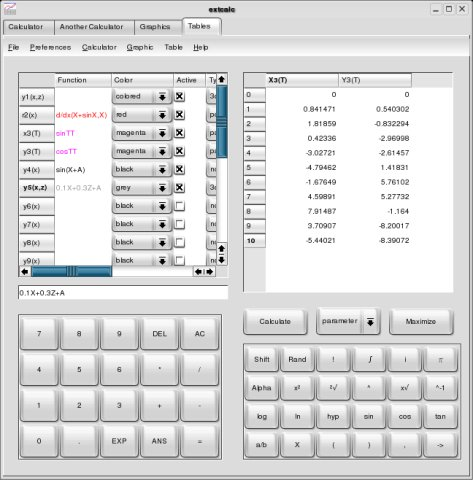
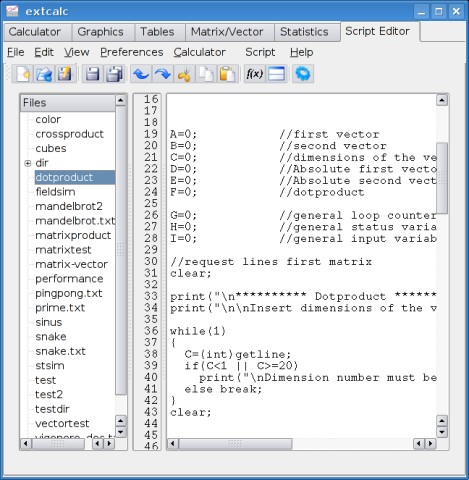

| Unary operators with operand right |
-
sin, cos, tan
asin, acos, atan
sinh, cosh, tanh
asinh ,acosh, atanh
log, ln
sqrt, curt
real, imag, abs, arg, conj
! (not)
~
(int), (float), (bool), (string)
|
| Unary operators with operand left |
! (Faculty)
|
| Binary operators |
;
&& ||
-> =
== != >= <= > <
+ - * / %
<< >>
x & |
^
root
sprod
|
| Script commands |
if else
while for
print() clear setcursor(,)
sleep()
rnd()
run()
d/dx(,) integ(,,)
getline getkey keystate
break continue stop
|
| brackets |
( )
{}
|
| values |
345
786.899
-76e-8
786i
"lkasdjl"
|
| variables |
A
A[]
A[][]
|
In base mode, the letters A - F are reserved for hexadecimal numbers, so they can't be used as variables.
But you can use the variables from G to Z to store results in base mode.
This mode is mainly used for logic functions and transformations between the different numeral systems.
If you want to input a number of a numeral system different to the default one, which you can choose with the
quick preferences box, you have to write a special prefix before the number:
Examples:
| Function | Procedure
|
|---|
| Calculate y-value |
Insert a x-value into the input line or click into the graphics output window where you want to calculate the y-value.
Then press the calculate button.
The y-value of all displayed graphs will be shown in a table.
Parameter graphs may have more than one y-value with the same x-value.
For 3D-Graphs you have to insert x-value and z-value to calculate the y-value
|
| Calculate Roots |
Choose a function from the function box and press the calculate button to calculate the roots of a function.
|
| Newton's Method |
This is a special method of calculating roots.
You can set a start value for the calculation and the number of steps to calculate.
All results will be shown in the table. The first item in the last line is your result.
|
| Calculate x-values |
Choose a function from the box and type the y-value you want into the input line.
When you press the calculate button, the x-values are shown in the output table.
For 3D-graphs, the y-value is also needed for calculation.
|
| Points of intersection |
Choose two graphs from the boxes and press the calculate button.
Then the points of intersection of the two graphs are shown.
Don't choose two times the same function.
|
| Maximum and Minimum values |
Choose a graph and press the calculate button and then all extreme values will be calculated.
|
| Integral Calculation |
Just set a start point and an end point, then you can integrate the cosine function.
The size of the area between the graph and the x-Axis is calculated.
In 3D-Mode, you have to set X-Start, X-End, Z-Start and Z-End points for integration.
The volume between the X-Z-Plane and the graph is calculated.
|
| Differential Calculation |
For a differential calculation, you must choose a function and the point to calculate, then press the calculate button.
It is also possible to calculate the Cartesian differentiation of a parameter function.
For 3D-Functions, you have to set a X- and a Z-Value.
All partial differentials at the given point were calculated.
|
| Calculate z-values |
Choose a function from the box and type the x-value and the y-value into the input fields.
Pressing the calculate-button will show you the results.
|
Text drawing: If you press the text button, you will see an input dialog where you can set the text to draw.
When you hold down the left mouse button, you can also see a preview. If you press the mouse button again, the text will be inserted again.
To change the text, text size or color, you have to press the Text-button again.
Rubber: If you want to erase a part of the drawn things, you can use this tool. It makes the erased areas transparent. In preview mode, it is shown white.
Furthermore, you have an undo button and a button to clear the complete draw area.
3.3 Tables
In Extcalc, it is also possible to generate tables from functions.

The table window of Extcalc.
For the generation of this value tables, the same functions as for graphs will be used. You can generate tables
from every types of functions.
The tables are generated from the functions, which are activated in the function table. You can calculate
only tables from the type of functions, which is chosen at the type box. You can choose the table function type directly
with the box in the table window or by the table menu or by the table preferences dialog.
In the table preferences dialog, you can set the start and the end value for your table and you can choose the
number of values to calculate.
For functions with the variable x or the complex z, on column per function is generated with the function values. For parameter
functions with the variable T, the same options as for the variable x are used. For every functions of this type,
one column with x-values and one column with y-values will be generated. If you generate a table with 3D-functions,
for every z-value of every function, one column will be generated.
3.4 Script Programming

Extcalc contains a script interpreter for running small scripts. You can edit and run this scripts directly with Extcalc.
3.4.1 Introduction
The syntax for Extcalc scripts is similar to C-language syntax, but the normal calculator commands and operations can also be used in
this scripts.
You can't use all script commands in the normal calculator. Loops and the command to run another script can only be used in script,
not in the calculator.
The scripts programs run in a separate console, and you may use the other extcalc functions while running a script.
Scripts can be managed, edited and started from the integrated script editor.
In this version 0.8.5 are not all planned features included.
3.4.2 The Script-Editor

The integrated script editor includes all needed editor functions and you can use it to write, modify and run your scripts.
Before you can use this editor, you have to create the script directories. Normally, this is done at the first start of extcalc, but if you
haven't done it there, you may need use the script preferences dialog from the preferences menu to create them.
There you have to create a script root directory and set the names for a code subdirectory and a data subdirectory.
This new script code directory will contain some example scripts. Other example scripts can be found at the Extcalc homepage
extcalc-linux.sourceforge.net.
- If
Syntax:
if( condition )
command for condition true;
else
command for condition false;
If you want to run more commands, they must be written in braces (without semicolon at the end).
Example:
if(A==5)
A=7;
else
{
A=A+1;
if(A>10)
A=0;
}
- While
Syntax:
while( condition )
command that is ran while condition true;
If you want to run more commands, they must be written in braces (without semicolon at the end).
If the loop should run all time, you can write while(1), but you always have to set a condition
Example:
F=0;
while(F==0)
{
F=keystate;
sleep(10000);
}
- For
Syntax:
for(initialization; condition; count-command)
command that is ran while condition true;
If you want to run more commands, they must be written in braces (without semicolon at the end).
At initialization, you can set the counter variable to the start value.
The loop runs, as long as the condition is true.
The printf-command is executed in every run. It can be any command.
If you don't need the initialization or the condition, you can only type a semicolon. If you don't need the count-command
you can leave it out.
Example:
for(A=-4;A<0;A+1->A)
print(A);
for(;;)
print("this runs always");
- Print
Syntax:
print( Output );
Output can be a variable, a command or a constant (like text).
You can only set one input.
Example:
A=12;
print(A+3); //Output: 15
print("Hello World!\n"); // Text with newline at the end
print(3>5); //prints out false
- getline
Syntax:
getline;
This command does only make sense, if you use the return value.
Example:
X=getline;
print(X);
//or:
print(getline);
- getkey
Syntax:
getkey;
This command does only make sense, if you use the return value.
It blocks the program until you press any button.
The return value is a string and you may need to convert it.
Example:
F=0;
while(F!=97) //loop runs, until you press a
{
F=getkey;
F=(int)F;
}
- Keystate
Syntax:
keystate;
This command does only make sense, if you use the return value.
It doesn't block the program.
If no button was currently pressed, it returns 0.
The return value is a string and you may need to convert it.
Example:
F=0;
while(F!=97) //Loop runs, until you press a
{
F= keystate;
F=(int)F;
sleep(10000); //break
if(F==0)
print("Press a to stop\n"); //This text is always printed
}
- Sleep
Syntax:
sleep( Time in microseconds );
The script is stopped for the given time.
If you want to make a program run slower, you should use this command and no empty loop.
A program that interacts with the user or a program that prints very much should use this command because
otherwise the script console may not have enough cpu time to show to show its content on time.
An example can be found at the keystate command.
- readfile
Syntax:
readfile( filename );
Reads the file with the name filename and returns its content as string.
The files to read and write must be located in the script data directory. Subdirectories were not supported.
filename must be a string. if filename is no string, or the file could not be read, an empty string is returned.
- writefile
Syntax:
writefile(filename , content);
Writes the content ans string into a file named filename.
If the file doesn't exsit, it will be created. If it exists, it will be cleared.
The filename must be a string. As at readfile, subdirectories and absolute paths were not supported.
- appendfile
Syntax:
appendfile(filename , content);
The same as writefile, but if a file still exists, the content will be appended.
Example:
removefile("count.txt"); //remove file, if it exists
for(C=0; C<100; C++) //loop from 0 to 99
{
apendfile("count.txt",C); //write numbers from 0 to 99 into a file
appendfile("count.txt","\n"); //seperated by a newline
}
- removefile
Syntax:
removefile(filename);
This command removes the file filename from the script data directory.
- glshow
Syntax:
glshow;
This command updates the GL window.
- glclear
Syntax:
glclear;
This command clears the GL window.
- glbegin
Syntax:
glbegin( type );
This commands must be called to start drawing. It must also be called to draw into a dislplay list.
The draw type is also set by this command. The command is just written inside the brackets.
The following types can be set:
points
lines
linestrip
lineloop
triangles
trianglestrip
trianglefan
quads
quadstrip
polygon
- glend
Syntax:
glend;
This command must be called after glbegin(), when drawing is done.
- glbeginlist
Syntax:
glbeginlist;
This command starts a display list. After this command, all gl commands expect text drawing were stored in the
display list.
- glendlist
Syntax:
glendlist;
This command ends the display list and returns the list ID.
The returned ID is an integer and must be stored to call the list.
- glcalllist
Syntax:
glcalllist;
With this command, you can call a display list, so that it is drawn.
Using display lists instead of calling GL commands directly is much faster.
Example:
glbeginlist; //start list
glbegin(lines) //start drawing lines
glpoint(-5,-5,-5); //set coordinates
glpoint(5,5,5);
glend; //end drawing lines
glbegin(triangles); //start drawing triangles
glpoint(-5,-5,0); //set coordinates
glpoint(5,-5,0);
glpoint(0,5,0);
glend; //end drawing triangles
L=glendlist; //end list, store ID
glclear;
glmove(0,0,1); //set transformation matrix
glcalllist(L); //call list
glmove(0,0,-2); //change transformation matrix settings
glcalllist(L); //call list again
glshow; //show scene
- glpoint
Syntax:
glpoint(x,y,z);
This command must be called to set object coodinates after calling glbegin().
Parameters are three floating point values for x-, y-, and z-coordinate.
- glcolor
Syntax:
glcolor(r,g,b);
With this command, you can set the draw color.
The parameters are integer values for red, green and blue. They must be in a range between 0 and 255.
- glmove
Syntax:
glmove(x,y,z);
This command moves a GL object.
The paramters are float values for the coordinates.
GL transformations were always multiplied to a single transformation matrix. This means, that the transformation command that has
been called first, will be done as last.
- glrotate
Syntax:
glrotate(angle,x,y,z);
GL objects can be rotated by this command. The rotation is described by the angle in degrees (angle)
and by a vector (x,y,z), which represents the rotation axes. All parameters are of type float.
GL transformations were always multiplied to a single transformation matrix. This means, that the transformation command that has
been called first, will be done as last.
- glscale
Syntax:
glscale(x,y,z);
With this command, a GL object can be scaled. All parameters are of type float.
GL transformations were always multiplied to a single transformation matrix. This means, that the transformation command that has
been called first, will be done as last.
Example:
#config gl //gl initialisation
#config axesoff
#config rasteroff
#config labelsoff
glstartlist; //generate gl list for a cube
glbegin(quads);
glpoint(-1,-1,-1);
glpoint(1,-1,-1);
glpoint(1,1,-1);
glpoint(-1,1,-1);
glpoint(-1,-1,1);
glpoint(1,-1,1);
glpoint(1,1,1);
glpoint(-1,1,1);
glpoint(-1,-1,-1);
glpoint(-1,-1,1);
glpoint(-1,1,1);
glpoint(-1,1,-1);
glpoint(1,-1,-1);
glpoint(1,-1,1);
glpoint(1,1,1);
glpoint(1,1,-1);
glpoint(-1,-1,-1);
glpoint(-1,-1,1);
glpoint(1,-1,1);
glpoint(1,-1,-1);
glpoint(-1,1,-1);
glpoint(-1,1,1);
glpoint(1,1,1);
glpoint(1,1,-1);
glend;
L=glendlist; //end list and store list
R=0; //rotation angle
while(1)
{
R=R+1;
glclear; //draw scene
//int this order, the cube rotates around its y-axes, has a size of 4x4x4, and
//its rotatione axes is located at 12,0,0
glscale(4,4,4); //resize
glmove(3,0,0); //move
glrotate(R,0,1,0); //rotate
glcolor(30,30,200);
glcalllist(L);
glloadidentity;
//int this order, the cube rotates around the coordinate systems y-axes, has a size of 3x3x3, and
//rotatis with radius of 9
glscale(3,3,3); //resize
glrotate(R,0,1,0); //rotate
glmove(3,0,0); //move
glcolor(200,30,20);
glcalllist(L);
glshow;
sleep(30000);
}
- glloadidentity
Syntax:
glloadidentity;
This command resets all transformations.
- glstring
Syntax:
glstring(x,y,text);
This command shows a text at the 2D-position x,y. The start point is the upper left edge.
The coordinates are in pixels. x and y are integer values. Text can be a string or a number (float or int).
- type converting
Syntax:
(target type)variable;
target type must be one of (int) (float) (string) (bool).
You can also use them with constants.
Example:
A=12.3545;
A=(int)A; // A is now 12
print((int)"abc"); //abc can not be converted to a number, so it is set to 97 (ASCII-Code of a)
C="234.45";
D=(float)C; //text can be interpreted as number, so it is set to the value
print(D+1); //prints 235.45
- Running subprograms
Syntax:
run("script path");
With this command, you can execute another code file from your script.
The script path must be relative to the script code directory.
The script path must be hard coded in your script code
With this command, it is also possible to program a recursive algorithm. But you should not do that, because this
may lead to a stack overflow and the program will crash. The script interpreter can not prevent this crash.
Example:
run("subprogram"); //runs a subprogram with the name subprogram that is in the script code directory
runt("prog/routine4"); //runs a subprogram with the name routine4 which is in the directory prog
- Arrays
Syntax:
Variable[index]; //1-dimesional array
Variable[1. index][2. index]; //2-dimensional array
Every variable can also be an array, if you use the index-operator on it
Without index-operator, you always access the element with index 0.
If you want to access a single character of a string, you use the same syntax.
If you write one index, and the variable contains only a string at index 0, you access a character inside the string.
If you write two indices and the element at the first index is a character, you also access a character inside the string.
Example:
A=" ";
for(C=9; C>=0; C=C-1) //reads 10 characters
A[C]=getkey;
print(A); //prints the characters inverted
- Possible Operators
Operator List
In script interpreter integrated operators (can be used with every variable type)
+ add
- sub
== compare
!= unequal
> greater
< less
>= greater or equal
<= less or equal
&& logic and
|| logic or
! logic not
= set (like in C)
-> set (like in Calculator)
[] index operator
[][] index operator matrix
All other operators can be used like in the calculator.
The operators can also be used together.
12.3545->A;
(int)A->A; // A is now 12
print((int)"abc"); //abc can not be converted to a number, so it is set to 97 (ASCII-Code of a)
"234.45"->C;
(float)C->D; //Text can be converted do a number, so D is set to this value
print(D+1); //prints 235.45